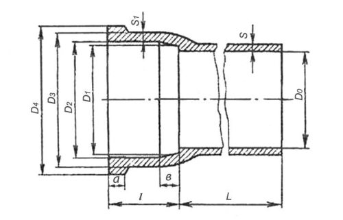
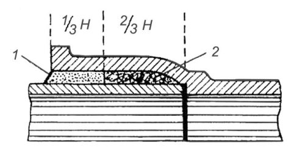
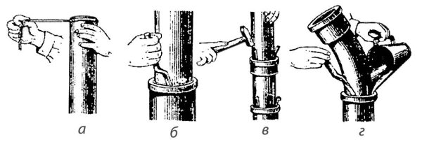

Соединение чугунных раструбных труб.


Общие сведения. Чугунные трубы применяют для наружной сети водопровода, внутренней сети канализации и водостоков. Первые называются водопроводными, вторые – канализационными трубами.
Водопроводные и канализационные трубы и фасонные части к ним отливают из серого чугуна. Снаружи и внутри трубы для предохранения от коррозии покрывают слоем нефтяного битума БНИ-1У. В результате покрытия внутренняя поверхность труб становится более гладкой, что уменьшает трение воды о их стенки.
Качество чугунных труб проверяют, осматривая и легко обстукивая молотком для обнаружения трещин. Поверхность труб снаружи и внутри должна быть чистой и гладкой, без плен, швов, раковин, пузырей, свищей, шлаковых включений, трещин и других дефектов, влияющих на прочность. Металл трубы в изломе должен быть однородным, мелкозернистым, плотным и легко поддаваться обработке режущим инструментом.
Чугунные водопроводные трубы диаметром от 50 до 1200 мм, толщиной от 6,7 до 31 мм и длиной от 2 до 7 м соединяют на раструбах (рис. 19). Чугунные канализационные трубы изготовляют с раструбами длиной от 60 до 75 мм в зависимости от диаметра труб. Ширина зазора между внутренней поверхностью раструба и наружной поверхностью вставленного в раструб конца другой трубы равна 6 мм для труб диаметром 50 и 100 мм и 7 мм для труб диаметром 150 мм.

Рис. 19. Чугунная канализационная труба с раструбом
Сборка чугунных труб с заделкой раструбов цементом. Чугунные канализационные трубы и фасонные части соединяют, заделывая зазор между внутренней поверхностью раструба и наружной поверхностью вставленного в раструб конца трубы или фасонной части (рис. 20).
Концы соединяемых деталей тщательно очищают от грязи, и трубу вставляют в раструб другой трубы. Затем на выступающую из раструба трубу навертывают кольцами жгут из смоленой пряди и конопаткой плотно вгоняют его в зазор раструба. Чтобы конец жгута при этом не попал в трубу и не засорил трубопровод, при навертывании первого кольца конец жгута захлестывают сверх кольца. Смоленую прядь законопачивают на 2/3 глубины раструба.

Рис. 20. Заделка раструба цементом
После уплотнения смоленой пряди приготовляют цементный раствор, а затем оставленное место в раструбе заполняют с помощью совка раствором 1 и плотно зачеканивают чеканкой и молотком до тех пор, пока чеканка не начнет отскакивать от цемента. Для заделки раструба применяют цемент марки 300 или 400, который тщательно перемешивают с водой в пропорции девять частей цемента на одну часть воды (по массе). Чтобы цементный раствор хорошо схватился, по окончании зачеканивания его следует накрыть мокрой тряпкой. В жаркую погоду тряпку время от времени смачивают водой. В зимнее время цементный раствор приготовляют на горячей воде, а раструбы подогревают. Стыки после заделки утепляют.
Вместо цемента для заделки раструба можно использовать асбестоцемент. Асбестоцементную смесь для заделки стыков приготовляют механическим перемешиванием цемента марки не ниже 400 и асбестового волокна (не ниже 4-го сорта) в соотношении 2:1. Непосредственно перед заделкой каждого стыка сухую асбестоцементную смесь увлажняют, добавляя 10–12 % воды от массы смеси. Асбестоцементной смесью стык заделывают примерно на 1/3 высоты раструба.
Сборка чугунных труб с заделкой раструбов расширяющимся цементом. Заделка раструбов чугунных труб смоленой прядью и цементом требует большой затраты труда, значительного расхода пряди и длительного времени для схватывания цемента. Кроме того, герметичность соединений зависит от качества уплотнения раструба.
Более совершенной и простой является сборка чугунных канализационных труб с заливкой раструбов расширяющимся цементом (рис. 21). Этот цемент водонепроницаем и обладает способностью расширяться при твердении и самоуплотняться. Применение расширяющегося цемента для заделки раструбов значительно ускоряет процесс сборки чугунных канализационных труб, так как отпадает необходимость конопатки раструбов смоленой прядью и чеканки стыка.

Рис. 21. Приемы заделки стыков чугунных канализационных труб расширяющимся цементом: а – намотка прядей, б – осадка прядей, в – установка и центрирование трубы, г – заделка цементом
Сначала подбирают и подгоняют необходимые трубы и фасонные части. После этого жесткой кистью очищают места стыков от пыли и грязи и промывают водой.
На конец трубы, который заводят в раструб другой трубы или фасонной части, наматывают два винта белой пряди толщиной 5 мм и длиной 440 мм для труб диаметром 50 мм и длиной 760 мм для труб диаметром 100 мм. Деталь с намотанной прядью вставляют в раструб другой детали, а прядь тонкой конопаткой осаживают вниз.
Затем трубу, вставленную в раструб нижней детали, центрируют тремя металлическими клиньями
так, чтобы ширина кольцевого зазора между трубой и раструбом была везде одинакова, и вгоняют клинья легкими ударами молотка.
Для заделки подготовленных стыков в сосуд для приготовления раствора вначале засыпают цемент. Для трубы диаметром 50 мм на один стык расходуют 100 г цемента, для трубы диаметром 100 мм – 200 г. Затем в сосуд с цементом наливают воду (до 70 % от объема цемента). Раствор непрерывно перемешивают, чтобы не было комков и сухих частиц. Кольцевой зазор стыка заделывают цементом за одни раз.